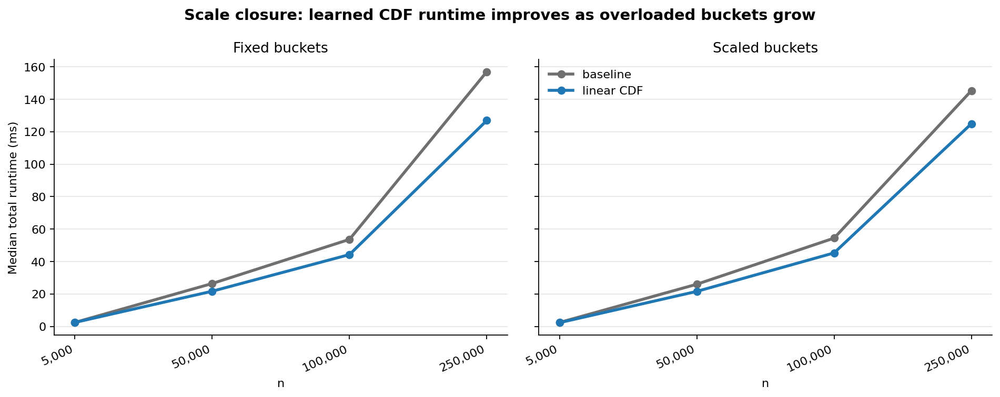
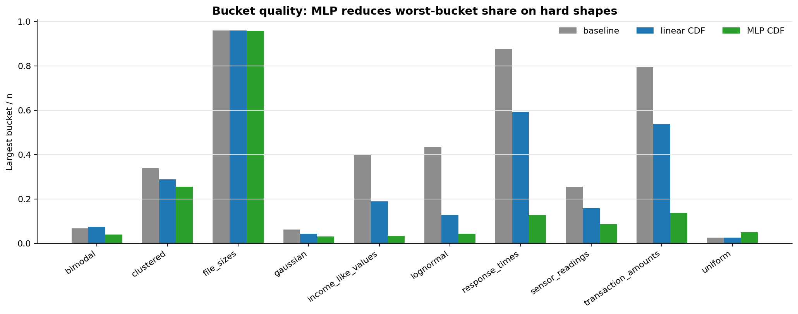
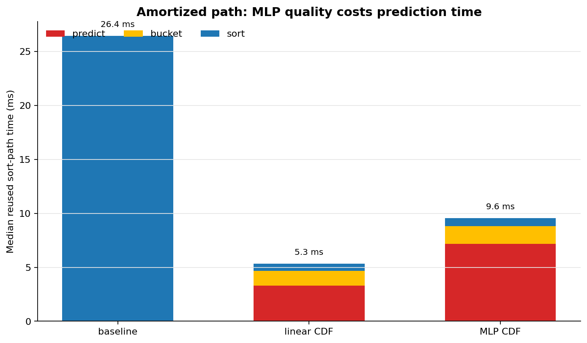

Bucket sort is fast when every bucket holds about the same number of items. The usual rule places buckets at equal steps between the minimum and maximum value — that only works if the data is spread uniformly. Here, a small regression model estimates the cumulative distribution (CDF) of the data and uses it as the bucket index — a learned-index approach. The browser demo compares both strategies on the same synthetic sample; the evidence section below shows the real Python benchmark results. Hover the charts for per-bar detail.
Machine learning does not replace the sort. It only replaces the bucketing function — the step that decides which bucket each value enters. Everything after that is standard bucket sort: sort inside each bucket, then concatenate in bucket order.
Synthetic scenarios mimic skewed real data (order sizes, latency, etc.). The Python benchmarks use the same arrays for baseline and learned paths.
Sort a sample of size n. For each value x, record its normalized rank in [0, 1] — its position in the sorted list. That rank is the empirical CDF target: “what fraction of data lies at or below x?”
Fit f(x) → [0, 1]. The Python package includes a CPU linear_cdf model and an optional Torch mlp_cdf model for CPU or CUDA. Input: scalar value. Output: predicted rank.
Map each value through f, scale to bucket count B, and clamp. A perfect CDF model sends mass uniformly across [0, 1], so buckets fill evenly — the precondition for near-linear bucket sort.
Insertion sort (or another stable sort) within each bucket, then append buckets 0 … B−1. Final order is identical to a full sort; only the partition changes.
Assumes values are uniformly distributed between min and max.
Learns the actual quantile structure of the sample.
Why this is “smart” architecture: The CDF is the statistically correct map from raw values to uniform quantiles.
Classical bucket sort hardcodes uniformity in value space; the learned path hardcodes uniformity in rank space.
Same sort algorithm downstream — a better index makes the existing algorithm work as designed.
This browser demo approximates step 3–4 with empirical quantiles; the shipped Python package uses trained linear_cdf and optional Torch mlp_cdf models.
Browser charts are illustrative. They do not run the Python models, train Torch, or load benchmark JSON. Real project claims come from the benchmark artifacts and plots below.
Histogram of the raw sample. Skew or multiple peaks here mean the min–max index will misallocate buckets; the CDF model is trained to correct for exactly this shape.
Same n, same B — only the bucketing function differs. Height = items per bucket before intra-bucket sort. Balanced occupancy (bars near the dashed line) is what bucket sort needs for O(n) behavior; spikes mean O(k²) work inside overloaded buckets.
Primary: bucket balance. Secondary: estimated comparison cost inside buckets (proxy for sort time).
| Metric | Baseline | Learned (CDF) |
|---|
All methods still return a correctly sorted result. The difference is how they choose buckets before sorting inside each bucket.
Uses min-max scaling directly as the bucket index.
Fits a CPU linear model to empirical CDF ranks.
Fits an optional Torch MLP CDF model on CPU or CUDA.
These plots are generated from fresh benchmark JSON artifacts by scripts/run_part5_evidence.py.
Median total runtime favors linear_cdf more clearly as n grows.

mlp_cdf usually reduces the largest bucket on hard shapes, which is the strongest bucket-quality result.

linear_cdf has the fastest reused sort path; mlp_cdf is slower because prediction time dominates.
